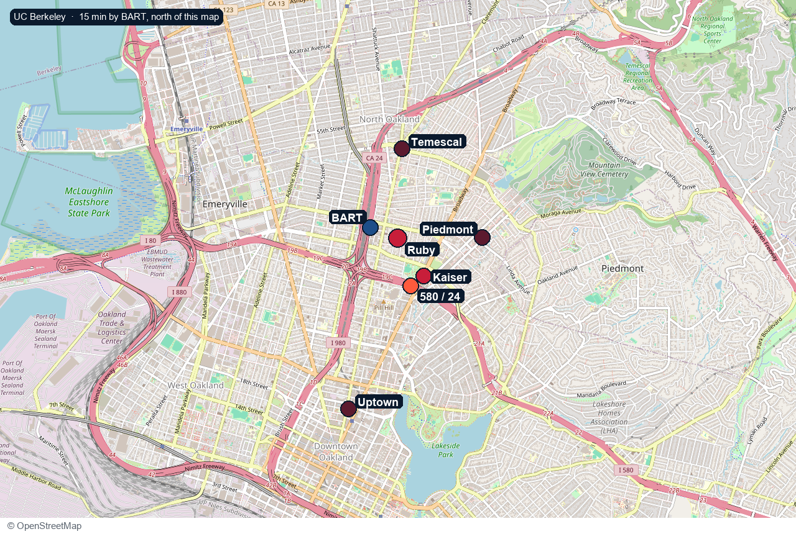

BART & Transit
WalkMacArthur BART Station ~10 min walk (0.5 mi)
Mosswood · Oakland 94609
Walk Score 94 · Transit 88. Care, park, and BART about 10 min walk. Target, Trader Joe’s, Chick-fil-A about 10 min drive or bus.
94609 · walkability
MacArthur BART Station ~10 min walk (0.5 mi)
Kaiser Permanente & Alta Bates Summit Medical Center ~10 min walk
CA-24 / I-580 / I-980 On-Ramps ~2–3 min drive
Temescal & Piedmont Ave (Dining/Shops) ~10–15 min walk
Uptown Oakland (Fox Theater, Paramount Theatre) ~7 min drive / 1 stop on BART
UC Berkeley ~15 min via BART or drive

At the building
The desk